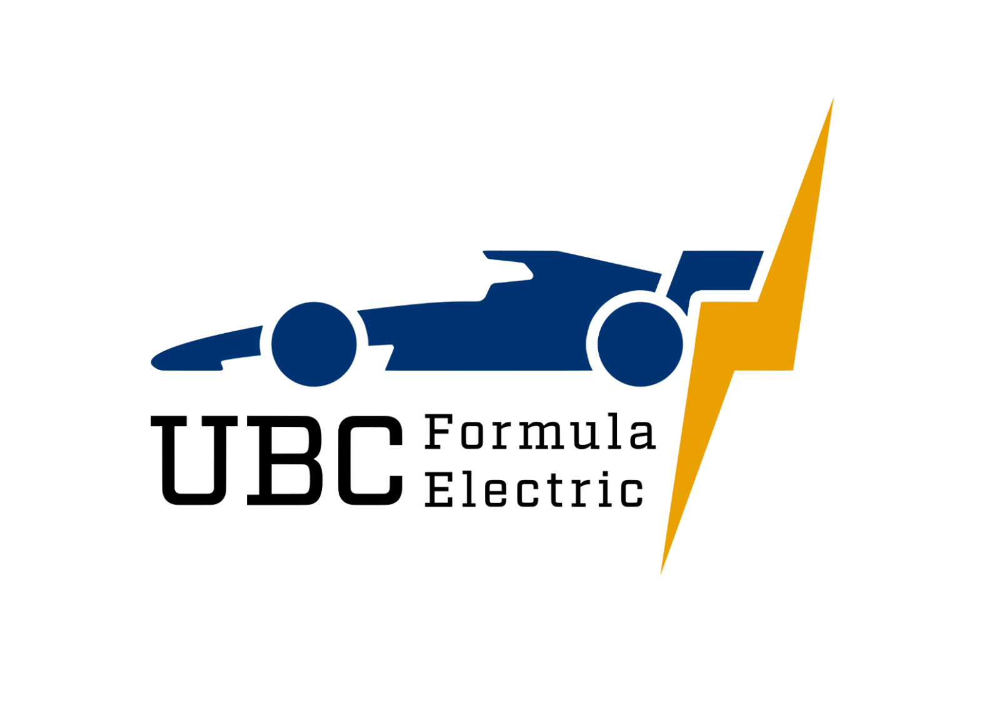
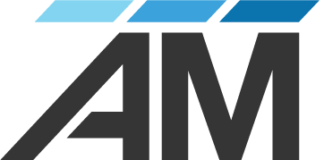
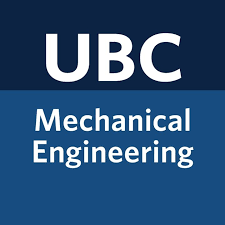
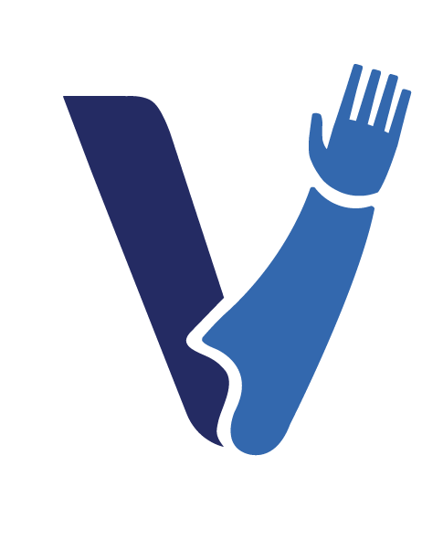
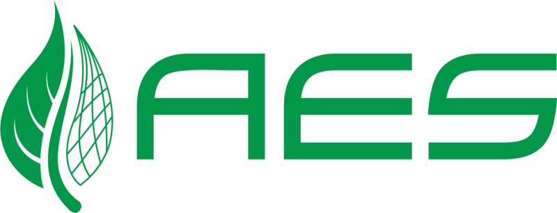

Experience
Where I've done the work.
Roles at the intersection of mechanical design and software. For just the highlights, the résumé is here →.
Jun 2025 – Present
leadership
leadership
Chassis Lead

UBC Formula Electric- Own the structural design of the 2026 electric race car's 4130 chromoly tube frame end to end — load-path reasoning, tube sizing, and joint design.
- Deployed SVN-based CAD version control on Oracle Cloud and set up Jira milestone tracking across subteams for a 100+ member organization.
- Authored SOPs and onboarding guides, and built internal web tooling — a Zotero-API resource library and a React/Three.js shop-inventory system with barcode scanning and a 3D bay map.
- Ran the full structural analysis package: suspension mounting tube-bending calcs, torsional-stiffness modeling (Deakin et al.), impact-attenuator sizing, and harness attachment-point analysis, validated in ANSYS Static Structural.
May – Aug 2025
co-op
co-op
Mechanical Engineering Co-Op

Avalon Mechanical- Created detailed mechanical layouts for HVAC, plumbing, and fire suppression systems.
- Calculated heating and cooling loads and sprinkler-system hydraulics.
- Built CAD automations that improved workflow efficiency by over 30%.
Sep 2023 – Jun 2025
student team
student team
Chassis Team Member
UBC Formula Electric
- Built a full suspension load-analysis pipeline in Python using a Pacejka MF5.2 tire model, assembling eight design load cases and exporting them straight to ANSYS chassis FEA.
- Produced the SUS-F01 technical design document covering control-arm and upright FEA, ARB sizing, and a rear-bellcrank topology optimization achieving 56.7% mass reduction in 7075-T6.
- Developed DANCAM, a custom Python CAM pipeline converting SolidWorks DXF tube profiles to G-code for a DIY CNC plasma tube-notcher running FluidNC on an ESP32.
May 2024 – Feb 2025
research
research
Undergraduate Research Assistant

UBC Mechanical Engineering- Conducted research on tendon-driven prosthetic hands.
- Iteratively designed and 3D-printed prototypes for improved performance.
- Integrated MATLAB and Arduino for real-time motion control.
Jul 2022 – Present
volunteer
volunteer
Volunteer

Victoria Hand Project- Assembled low-cost prosthetic arms with voluntary open/close functionality and an adaptive grasp.
- Contributed concrete ideas to improve assembly speeds.
- Troubleshot and repaired broken and malfunctioning hands.
Oct 2021 – Jun 2023
intern
intern
Intern + Job Shadow

AES Engineering Ltd- Performed load calculations for multi-unit residential buildings.
- Created wiring diagrams and layouts based on the Canadian Electrical Code.
- Assisted in designing power distribution for high-efficiency buildings.
Education
B.A.Sc., Mechanical Engineering
University of British Columbia · Co-op
Biomechanics & Medical Devices (BMMD) option. Coursework across thermodynamics, fluid mechanics, structural analysis, and machine design, with self-directed depth in AI engineering and robotics.
Vancouver, BC
in progress
in progress